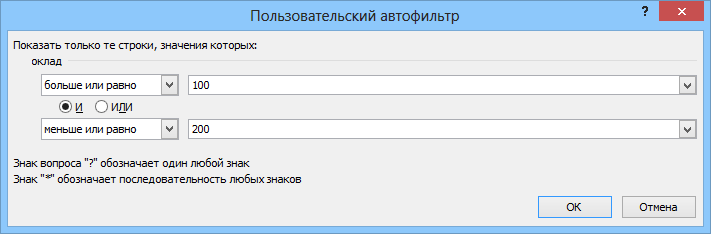
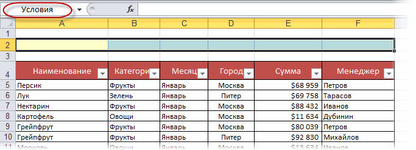
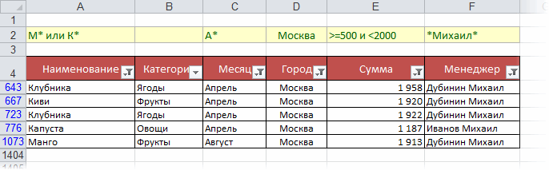

Суперфильтр на VBA
37586 25.11.2012 Скачать пример
Стандартный Автофильтр для выборки из списков - вещь, безусловно, привычная и надежная. Но для создания сложных условий приходится выполнить не так уж мало действий. Например, чтобы отфильтровать значения попадающие в интервал от 100 до 200, необходимо развернуть список Автофильтра мышью, выбрать вариант Условие (Custom), а в новых версиях Excel: Числовые фильтры - Настраиваемый фильтр (Number filters - Custom filter). Затем в диалоговом окне задать два оператора сравнения, значения и логическую связку (И-ИЛИ) между ними:

Не так уж и долго, скажут некоторые. Да, но если в день приходится повторять эту процедуру по нескольку десятков раз? Выход есть - альтернативный фильтр с помощью макроса, который будет брать значения критериев отбора прямо из ячеек листа, куда мы их просто введем с клавиатуры. По сути, это будет похоже на расширенный фильтр, но работающий в реальном времени. Чтобы реализовать такую штуку, нам потребуется сделать всего два шага:
Шаг 1. Именованный диапазон для условий
Сначала надо создать именованный диапазон, куда мы будем вводить условия, и откуда макрос их будет брать. Для этого можно прямо над таблицей вставить пару-тройку пустых строк, затем выделить ячейки для будущих критериев (на рисунке это A2:F2) и дать им имя Условия, вписав его в поле имени в левом верхнем углу и нажав клавишу Enter. Для наглядности, я выделил эти ячейки желтым цветом:

Шаг 2. Добавляем макрос фильтрации
Теперь надо добавить к текущему листу макрос фильтрации по критериям из созданного диапазона Условия. Для этого щелкните правой кнопкой мыши по ярлычку листа и выберите команду Исходный текст (Source text). В открывшееся окно редактора Visual Basic надо скопировать и вставить текст вот такого макроса:
|
1 2 3 4 5 6 7 8 9 10 11 12 13 14 15 16 17 18 19 20 21 22 23 24 25 26 27 28 29 30 31 32 33 34 35 36 37 38 39 40 41 42 43 44 45 46 47 48 49 50 51 52 53 54 55 56 57 58 59 60 |
Private Sub Worksheet_Change(ByVal Target As Range)
Dim FilterCol As Integer Dim FilterRange As Range Dim CondtitionString As Variant Dim Condition1 As String, Condition2 As String
If Intersect(Target, Range("Условия")) Is Nothing Then Exit Sub
On Error Resume Next Application.ScreenUpdating = False
'определяем диапазон данных списка Set FilterRange = Target.Parent.AutoFilter.Range
'считываем условия из всех измененных ячеек диапазона условий For Each cell In Target.Cells FilterCol = cell.Column - FilterRange.Columns(1).Column + 1
If IsEmpty(cell) Then Target.Parent.Range(FilterRange.Address).AutoFilter Field:=FilterCol Else If InStr(1, UCase(cell.Value), " ИЛИ ") > 0 Then LogicOperator = xlOr ConditionArray = Split(UCase(cell.Value), " ИЛИ ") Else If InStr(1, UCase(cell.Value), " И ") > 0 Then LogicOperator = xlAnd ConditionArray = Split(UCase(cell.Value), " И ") Else ConditionArray = Array(cell.Text) End If End If 'формируем первое условие If Left(ConditionArray(0), 1) = "<" Or Left(ConditionArray(0), 1) = ">" Then Condition1 = ConditionArray(0) Else Condition1 = "=" & ConditionArray(0) End If 'формируем второе условие - если оно есть If UBound(ConditionArray) = 1 Then If Left(ConditionArray(1), 1) = "<" Or Left(ConditionArray(1), 1) = ">" Then Condition2 = ConditionArray(1) Else Condition2 = "=" & ConditionArray(1) End If End If 'включаем фильтрацию If UBound(ConditionArray) = 0 Then Target.Parent.Range(FilterRange.Address).AutoFilter Field:=FilterCol, Criteria1:=Condition1 Else Target.Parent.Range(FilterRange.Address).AutoFilter Field:=FilterCol, Criteria1:=Condition1, _ Operator:=LogicOperator, Criteria2:=Condition2 End If End If Next cell
Set FilterRange = Nothing Application.ScreenUpdating = True End Sub |
Все.
Теперь при вводе любых условий в желтые ячейки нашего именованного диапазона тут же будет срабатывать фильтрация, отображая только нужные нам строки и скрывая ненужные:

Как и в случае с классическими Автофильтром (Filter) и Расширенным фильтром (Advanced Filter), в нашем фильтре макросом можно смело использовать символы подстановки:
· * (звездочка) - заменяет любое количество любых символов
· ? (вопросительный знак) - заменяет один любой символ
и операторы логической связки:
· И - выполнение обоих условий
· ИЛИ - выполнение хотя бы одного из двух условий
и любые математические символы неравенства (>,<,=,>=,<=,<>).
При удалении содержимого ячеек желтого диапазона Условия автоматически снимается фильтрация с соответствующих столбцов.
P.S.
· Если у вас Excel 2007 или 2010 не забудьте сохранить файл с поддержкой макросов (в формате xlsm), иначе добавленный макрос умрет.
· Данный макрос не умеет работать с "умными таблицами"
Ссылки по теме
· Что такое макросы, куда вставлять код макроса на VBA, как их использовать?
· Умные таблицы Excel 2007/2010